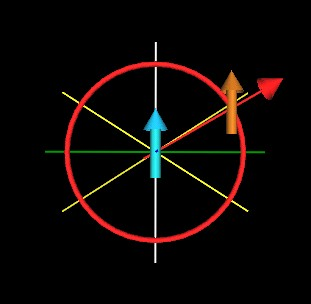

Here is an example of a FCC (Face Centered Cubic) lattice.
Within this lattice we place a Jitterbug such that when fully opened it matches the vertices of the FCC lattice.
When closed, the Jitterbug (red) is in the shape of an Octahedron. When fully opened, the Jitterbug is in the shape of a cuboctahedron (a.k.a. Vector Equilibrium or just VE).
The Octahedron, having 8 triangular faces, may be divided into 8 irregular Tetrahedra. ("Irregular" here means that not all of the edges of the Tetrahedron are the same length.) These 8 irregular Tetrahedron are each defined by 3 vertices of the Octahedron plus the center of volume point. This defines the 4 vertices of the 1/8th Octahedra. One of these 1/8th of an Octahedron is shown in light blue below.
The rotation of this 1/8th Octahedron (an irregular Tetrahedron) defines a cone.
The cone angle is arccos(1/sqrt(3)) = 54.73561... degrees. (Some people may choose to call this the half-cone angle. It is the angle between the rotational symmetry axis (white line) and the surface of the cone.)
It is exactly the same angle as the precessional angle from Quantum Mechanics for a spin 1/2 particle in a magnetic field.
Here is a classical interpretation of the Quantum Mechanical, Spin Angular Momentum, Space Quantization, for a spin 1/2 particles (electron, proton) in a uniform magnetic field.
The applied magnetic field is along the z-axis (white line). The blue and green lines are the x and y axes. The red line is the spin angular momentum vector of the (pink/purple) particle. It makes an angle of arccos(1/sqrt(3)) = 54.73561... degrees with respect to the z-axis.
The equation for this angle from Quantum Mechanics is
For a spin-1/2 particle, j = 1/2, mj = (+-)1/2. This gives
which shows that theta=54.73561...° and is the same geometric cone angle shown above.
This is also the cone angle for the cone of (force) equilibrium between 2 dipoles for the special case that the 2 dipoles always point in the same direction.
Consider 2 dipoles (magnets with North and South poles). These may be positioned so that one is at the coordinate origin while the other is some distance away on the y-axis.
In the above figure, the z-axis is white running from top to bottom of the figure. The y-axis is green running from left to right of the figure. The x-axis is dark blue and is running out of the page.
A dipole (light blue) is at the coordinate origin. Another dipole (orange/light brown) is positioned some distance along the y-axis.
The force experienced by the orange/light brown dipole is represented by the red arrow/cone and by the red line of force connecting the two dipoles. The red arrow/cone is pointing away from the light blue dipole meaning that the orange/light brown dipole experiences a repulsive radial force in this position.
If we advance the orange/light brown dipole around the light blue dipole, along the red circle, then there is a region for which the force experienced by the orange/light brown dipole will be attractive, toward the light blue dipole. This is represented by a dark blue arrow/cone at the end of the red line of force.
There is also drawn in these figures 2 lines of equilibrium (light yellow) which indicates where along the red circle the orange/light brown dipole will experience no radial force toward or away from the light blue dipole.
|  | ||
| Repulsive Radial Force | Zero Radial Force | Attractive Radial Force |
Two things to note: 1) The dipoles always point in the same direction (in the z-axis direction), and 2) In addition to the radial force being described here, the dipoles will experience a torque. This torque is not considered in these situations. Only the radial force between the 2 dipoles is being considered.
Here is the complete radial force cycle of the orange/light brown dipole around the center, light blue dipole.
The light yellow lines make an angle of arccos(1/sqrt(3)) = 54.73561... degrees with respect to the z-axis.
If these light yellow lines are spun around the z-axis (see below for example) they would define 2 cones, one above the xy-plane and one below the xy-plane. The cone above the xy-plane is the same cone as illustrated above for the 1/8th Octahedron (the irregular Tetrahedron).
The equation for the radial component of the force between 2 dipoles is given by the equation
where epsilon is the angle between the direction that dipole 1 is pointing in and the direction that dipole 2 is pointing in. Alpha is the angle between dipole 1 direction and the line connecting dipole 1 to dipole 2. Beta is the angle between dipole 2 direction and the line connecting dipole 1 to dipole 2.
For the special (artificial?) case of dipole 1 pointing in the same direction as dipole 2, we have
This reduces the angular factor in the force equation to
The radial force on these dipoles is then zero when this angular factor is zero. This is the case when
Which means alpha = 54.73561...°, the same geometric angle illustrated above.
Usage Note: My work is copyrighted. You may use my work but you may not include my work, or parts of it, in any for-profit project without my consent.